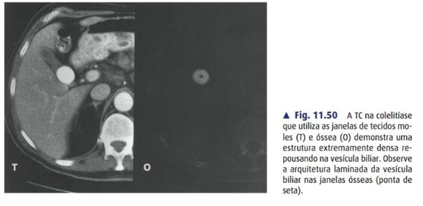
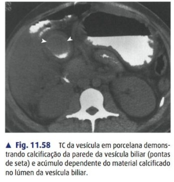

carolzita · pocket 🚑
Colecistite 🫃
📋 Quadro
🔬 TG18
⏱️ Timing
🔺 Calot/CVS
🔪 Laparo
✂️ Aberta
⚠️ Difícil
☠️ Traps
📋 Litíase → colecistite
- 👩 4 Fs: Female · Fat · Forty · Fertile
- 🥩 Cólica biliar: dor HD pós-gordura, <6h
- 🔥 Colecistite = obstrução do cístico + dor >6h + Murphy + febre

Fig. 11.50 — TC na colelitíase: janela de partes moles (T) mal mostra o cálculo denso; a janela óssea (O) revela a arquitetura laminada do cálculo na vesícula.
⚡ Complicações (nomes!)
🟡 Mirizzi
cálculo comprime hepático comum
🪨 Íleo biliar
tríade Rigler · obstrui íleo terminal
🍽️ Bouveret
cálculo obstrui o duodeno
🏺 Porcelana
risco de câncer → operar

Fig. 11.58 — TC da vesícula em porcelana: calcificação da parede (pontas de seta) e acúmulo dependente de material calcificado no lúmen.
alto rendimento HCPA·GHCMirizzi = hepático comum · Íleo biliar = íleo terminal (Rigler). Não trocar! 🔀
🔬 TG18
🩺 Diagnóstico (A+B+C)
A local
Murphy · massa/dor HD
B sistêmico
febre · PCR↑ · leuco↑
C imagem
US: parede >4mm, líquido, cálculo
🔎 Suspeita = 1A+1B · Definitivo = 1A+1B+C
📊 Gravidade
🟢 I leve
sem critério de II/III
🟡 II mod.
leuco>18mil · >72h · massa · inflamação grave
🔴 III grave
disfunção orgânica
alto rendimentoGrau II = >18mil / >72h / massa / gangrena. Grau III = falência de órgão ⚠️
⏱️ Timing
alto rendimento GHC·SC-POA·PUC🚀 LC precoce ≤7 dias da admissão / ≤10 dias dos sintomas (WSES). Precoce > esfriar!
🟢🟡 Grau I/II
LC precoce se tolera cirurgia
🔴 Grau III inapto
colecistostomia percutânea → chole depois
💤 Assintomática — operar se:
- 🏺 vesícula em porcelana
- 🔵 pólipo >10 mm · cálculo >3 cm
- 🩸 anemia hemolítica · pré-transplante
☠️ pega-ratãoLitíase assintomática comum NÃO se opera de rotina! 🚫
🔺 Calot & CVS
Triângulo
cístico + hepático comum + (fígado/artéria)
Conteúdo
artéria cística 🔴
🛡️ Rouvière
dissecar ventral ao sulco
alto rendimento HCPA·GHC·SC-POA🎯 CVS — 3 critérios: ① triângulo LIMPO ② terço inferior da vesícula SOLTO do leito ③ só 2 estruturas entrando
🧠 maceteCVS = "LIMPO · SOLTO · 2". Sem os 3 → NÃO clipa! ✋
🔪 Laparo — 7 passos
🟢 tradução simplesDuas metades: primeiro se prova quem é quem; só depois se corta. Toda lesão de via biliar acontece quando as duas se invertem.
1acessoPortais — 12–14 mmHg, óptica 30°,
4 portais: umbilical · epigástrico (à
direita do falciforme) · 2 subcostais D.
por quêÀ direita do falciforme o instrumento fica alinhado com o eixo do pedículo. À esquerda, trabalha em ângulo contra a anatomia.
2exposição — decisivoTração em 2 direções — proclive + rotação à esquerda. Fundo →
cranial. Infundíbulo →
ínfero-lateral.
por quêPuxar o infundíbulo para cima e medial alinha o cístico paralelo ao hepático comum — os dois viram um só. É a origem da lesão Strasberg E. A tração ínfero-lateral abre o ângulo. 🎯
3dissecçãoPeritônio do triângulo — anterior e posterior, varrendo a gordura. Sempre
alto, junto à vesícula.
por quêQuanto mais longe da vesícula, mais perto do hepatocoledoco e da hepática direita — que pode fazer alça no triângulo (caterpillar hump) e passar por cística.
4segurança — critério de paradaCVS: limpo · solto · 2 — ① triângulo limpo ②
terço inferior descolado do leito ③ só 2 estruturas entrando.
por quêNão é passo técnico, é critério de parada. Com o terço inferior solto, é anatomicamente impossível uma estrutura entrar sem ter sido vista. Sem os 3 → bailout. ✋
5vascular e ductalArtéria primeiro, ducto depois — clipes
2+1, coto
<1 cm. Cístico largo/friável →
endoloop, não clipe.
por quêArtéria antes porque sangramento arterial depois de seccionar o ducto obriga a manobras às cegas no hilo. Coto longo = cálculo residual. Clipe em cístico edemaciado escorrega → fístula.
6descolamentoRetrógrado, do infundíbulo ao fundo, no plano da
placa cística. Conferir
ductos de Luschka.
por quêEntrar fundo demais sangra e abre Luschka — fístula biliar com CVS perfeita e clipes íntegros.
7extraçãoSempre em saco pelo umbilical. Revisar com a pressão
reduzida. Recuperar cálculos derramados.
por quêBaixar a pressão revela sangramento venoso que os 14 mmHg estavam tamponando. Cálculo perdido = abscesso tardio meses depois.
⭐ 3 checagens antes de clipar① Triângulo limpo? ② Terço inferior solto? ③ Exatamente 2 estruturas?
3 "sim" → clipa. Qualquer "não" → bailout.
✂️ Aberta — 6 passos
🟢 tradução simplesNa aberta você troca a câmera pela mão. O que orienta é o tato — palpar o pedículo e sentir onde está o colédoco. Por isso ela é mais segura na vesícula hostil, não menos.
1acessoKocher (2 dedos abaixo do rebordo D)
ou mediana.
por quêKocher expõe o hilo direto, mas é janela fixa. Mediana se pode virar hepatectomia ou derivação — ela se estende.
2exposiçãoGosset/Balfour + válvula no fígado. Compressas rebatendo
cólon e duodeno. Mesma tração em 2 direções.
por quêRebater o duodeno é o que protege o colédoco — sem isso a 1ª porção sobe sobre o pedículo e o campo fica cego.
3dissecçãoCalot + CVS (vale igual na aberta).
Pringle digital: palpar o hepatoduodenal entre polegar e indicador.
por quêA vantagem real da aberta é a palpação: sente o cálculo impactado, sente o colédoco e pode ocluir o pedículo com os dedos. Nada disso existe na laparo. ✋
4vascular e ductalArtéria: ligar/transfixar
seda 2-0/3-0.
Ducto: ligadura dupla.
Colangiografia se dúvida.
por quêFio trançado segura melhor em vaso curto e retrátil. E se você já pensou em colangiografia, faça — ela define a anatomia em tempo real.
5descolamentoRetrógrada (colo→fundo) é o padrão ·
fundus-first se o triângulo está hostil.
por quêFundus-first evita dissecar às cegas — mas no cirrótico pode arrastar para dentro da placa cística e daí ao hilo. Se ele também estiver difícil → subtotal, não insistência.
6encerramentoHemostasia do leito · revisar
Luschka ·
dreno só se contaminação, dúvida, bile ou subtotal.
por quêDreno de rotina não previne coleção — mas na subtotal fenestrante é obrigatório, porque o coto foi deixado aberto de propósito.
⚠️ Vesícula difícil
alto rendimento GHC·SC-POA🆘 CVS inalcançável → bailout, nunca "dissecar com cuidado". Recomendação SAGES.
🔄 Converter — gatilhos
- 🧊 Anatomia não identificável (triângulo congelado)
- 🩸 Sangramento incontrolável
- 🩹 Suspeita de lesão de via biliar
- 🟡 Mirizzi · aderências densas · suspeita de câncer
📊 Preditores de conversão
🆘 Cardápio de bailouts
- ⬇️ Fundus-first (dome-down)
- ✂️ Subtotal — o mais eficaz
- 💧 Colecistostomia — paciente crítico
- 🔄 Conversão
- 🏥 Parar e encaminhar — decisão legítima
✂️ Subtotal (Strasberg 2016)
Fenestrante
coto aberto + ablação da mucosa + dreno · menos recidiva · mais fístula
Reconstituinte
fecha o remanescente · menos fístula · mais recidiva de cálculo
🧠 maceteFenestrante = aberta = drena · Reconstituinte = fechada = guarda
🟢 tradução simplesÉ desistir de tirar a vesícula inteira e deixar de propósito a parte colada no fígado — a que fica perto dos canos importantes. Tira o que dá; não encosta onde não enxerga.
🩹 Lesão biliar (Strasberg)
A
coto cístico/Luschka (+comum) → CPRE+stent
D
lesão lateral da via principal
E
secção da via principal → hepaticojejuno Y-Roux
☠️ pega-ratãoSuspeita de lesão → parar, colangiografia, chamar HBP! 🆘
☠️ Pega-ratões
trap 1Conversão ≠ fracasso, é segurança 🔄
trap 2Clipar antes da CVS = lesão biliar ✋
trap 3Precoce > esfriar (≤7d/≤10d) 🚀
trap 4Grau III inapto → colecistostomia 💧
trap 5Mirizzi (hepático comum) ≠ íleo biliar (íleo terminal) 🔀
trap 6Assintomática não opera de rotina 🚫
trap 7Strasberg A=coto · E=via principal 🩹
trap 8Calot contém a artéria cística 🔴
trap 9Tração do infundíbulo p/ cima alinha cístico e hepático = lesão E. Puxe ínfero-lateral ↘️
trap 10Fístula biliar com CVS perfeita e clipes íntegros = ducto de Luschka 💧
✅ resumo de bolso4Fs · Murphy · TG18 (A+B+C; II=>18mil/>72h/massa; III=falência) · LC precoce ≤7d/≤10d, III inapto→colecistostomia · Calot=a. cística · tração ínfero-lateral abre o ângulo · CVS "limpo-solto-2" + Rouvière · artéria antes do ducto, coto <1cm · peça em saco, revisar com pressão baixa · difícil→bailout (fundus-first/subtotal/colecistostomia/conversão) · fenestrante drena, reconstituinte guarda · Mirizzi/Csendes · Strasberg A→E 🎓